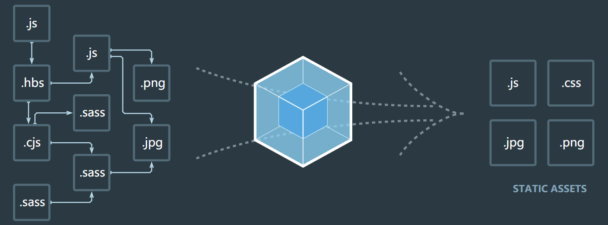
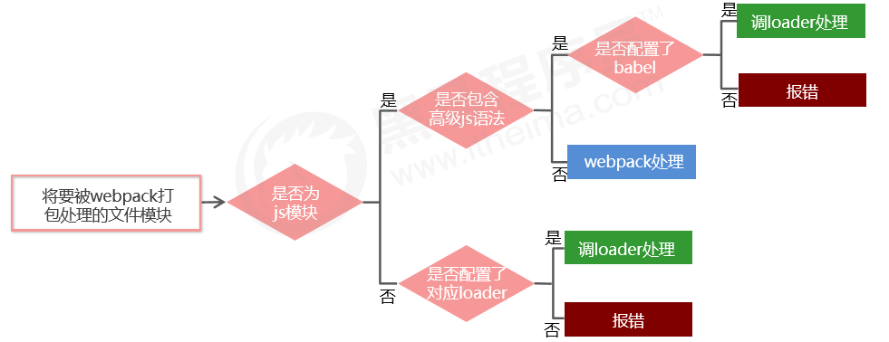

webpack
webpack 概述
webpack 是一个流行的前端项目构建工具（打包工具），可以解决当前 web 开发中所面临的困境。
webpack 提供了友好的模块化支持，以及代码压缩混淆、处理 js 兼容问题、性能优化等强大的功能，从而让程序员把 工作的重心放到具体的功能实现上，提高了开发效率和项目的可维护性。
目前绝大多数企业中的前端项目，都是基于 webpack 进行打包构建的。

webpack 的基本使用
创建列表隔行变色项目
- 新建项目空白目录，并运行 npm init -y 命令，初始化包管理配置文件 package.json
- 新建 src 源代码目录
- 新建 src -> index.html 首页
- 初始化首页基本的结构
- 运行 npm install jquery 命令，安装 jQuery
- 通过模块化的形式，实现列表隔行变色效果
示例代码如下：
1 2 3 4 5 6 7 8 9 10 11 12 13 14 15 16 17 18 19 20 21 | <!-- index.html --> <!DOCTYPE html> <html> <head> <script src="./index.js"></script> </head> <body> <ul> <li>这是第1个li</li> <li>这是第2个li</li> <li>这是第3个li</li> <li>这是第4个li</li> <li>这是第5个li</li> <li>这是第6个li</li> <li>这是第7个li</li> <li>这是第8个li</li> <li>这是第9个li</li> </ul> </body> </html> |
1 2 3 4 5 6 7 8 | // index.js import $ from 'jquery' $(function() { $('li:odd').css('backgroundColor', 'blue') $('li:even').css('backgroundColor', 'lightblue') }) |
打开 index.html 会报一个错误，因为此时不支持 ES6 的模块导入语法：
1 | Uncaught SyntaxError: Cannot use import statement outside a module |
在项目中安装和配置 webpack
- 运行 npm install webpack webpack-cli -D 命令，安装 webpack 相关的包
- 在项目根目录中，创建名为 webpack.config.js 的 webpack 配置文件
- 在 webpack 的配置文件中，初始化如下基本配置：
1 2 3
module.exports = { mode: 'development' // mode 用来指定构建模式 }
- 在 package.json 配置文件中的 scripts 节点下，新增 dev 脚本如下：
1 2 3
"scripts": { "dev": "webpack" // script 节点下的脚本，可以通过 npm run 执行 }
- 在终端中运行 npm run dev 命令，启动 webpack 进行项目打包。
- 使用打包后的 main.js 文件，可获得列表隔行变色的效果。
1 2
<!-- <script src="./index.js"></script> --> <script src="../dist/main.js"></script>
配置打包的入口和出口
webpack 的 4.x 版本中默认约定：
- 打包的入口文件为 src -> index.js
- 打包的输出文件为 dist -> main.js
如果要修改打包的入口与出口，可以在 webpack.config.js 中新增如下配置信息：
1 2 3 4 5 6 7 8 9 | const path = require('path') module.exports = { entry: path.join(__dirname, './src/index.js'), // 打包入口文件的路径 output: { path: path.join(__dirname, './dist'), // 输出文件的存放路径 filename: 'bundle.js' // 输出文件的名称 } } |
修改 script 脚本的引用路径为 "../dist/bundle.js"，同样可获得列表隔行变色的效果。
配置 webpack 的自动打包功能
- 运行 npm install webpack-dev-server -D 命令，安装支持项目自动打包的工具
- 修改 package.json -> scripts 中的 dev 命令如下：
1 2 3
"scripts": { "dev": "webpack-dev-server" // script 节点下的脚本，可以通过 npm run 执行 }
- 将 src -> index.html 中，script 脚本的引用路径，修改为 "/buldle.js"
- 运行 npm run dev 命令，重新进行打包
- 在浏览器中访问 http://localhost:8080 地址，查看自动打包效果
注意：
- webpack-dev-server 会启动一个实时打包的 http 服务器
- webpack-dev-server 打包生成的输出文件，默认放到了项目根目录中，而且是虚拟的、看不见的
配置 html-webpack-plugin 生成预览页面
- 运行 npm install html-webpack-plugin -D 命令，安装生成预览页面的插件
- 修改 webpack.config.js 文件头部区域，添加如下配置信息：
1 2 3 4 5 6 7
// 导入生成预览页面的插件，得到一个构造函数 const HtmlWebpackPlugin = require('html-webpack-plugin') // 创建插件的实例对象 const htmlPlugin = new HtmlWebpackPlugin({ template: './src/index.html', // 指定要用到的模板文件 filename: 'index.html' // 指定生成的文件的名称，该文件存在于内存中，在目录中不显示 })
- 修改 webpack.config.js 文件中向外暴露的配置对象，新增如下配置节点：
1 2 3
module.exports = { plugins: [ htmlPlugin ] // plugins 数组是 webpack 打包期间会用到的一些插件列表 }
配置自动打包相关的参数
在 package.json 中进行配置：
1 2 3 4 5 6 | // --open 打包完成后自动打开浏览器页面 // --host 配置 IP 地址 // --port 配置端口 "scripts": { "dev": "webpack-dev-server --open --host 127.0.0.1 --port 8888" }, |
webpack 中的加载器
通过 loader 打包非 js 模块
在实际开发过程中，webpack 默认只能打包处理以 .js 后缀名结尾的模块，其他非 .js 后缀名结 尾的模块，webpack 默认处理不了，需要调用 loader 加载器才可以正常打包，否则会报错！
loader 加载器可以协助 webpack 打包处理特定的文件模块，比如：
- less-loader 可以打包处理 .less 相关的文件
- sass-loader 可以打包处理 .scss 相关的文件
- url-loader 可以打包处理 css 中与 url 路径相关的文件
loader 的调用过程

打包处理 css 文件
- 运行 npm i style-loader css-loader -D 命令，安装处理 css 文件的 loader
- webpack.config.js 的 module -> rules 数组中，添加 loader 规则如下：
其中，test 表示匹配的文件类型， use 表示对应要调用的 loader 注意：1 2 3 4 5 6
// 所有第三方文件模块的匹配规则 module: { rules: [ { test: /\.css$/, use: ['style-loader', 'css-loader'] } ] }
- use 数组中指定的 loader 顺序是固定的
- 多个 loader 的调用顺序是：从后往前调用
- 在 src 目录下新建 css-> 1.css 文件，内容如下：
1 2 3
li { list-style: none; }
- 在 index.js 中导入 css 文件，查看打包效果。
1 2
import $ from 'jquery' import './css/1.css'
打包处理 less 文件
- 运行 npm i less-loader less -D 命令
- 在 webpack.config.js 的 module -> rules 数组中，添加 loader 规则如下：
1
{ test: /\.less$/, use: ['style-loader', 'css-loader', 'less-loader'] }
- 在 src 目录下新建 css-> 1.less 文件，内容如下：
1 2 3 4 5 6 7 8
body { margin: 0; padding: 0; ul { padding: 0; margin: 0; } }
- 在 index.js 中导入 less 文件，查看打包效果。
1 2 3
import $ from 'jquery' import './css/1.css' import './css/1.less'
打包处理 scss 文件
- 运行 npm i sass-loader node-sass -D 命令
- 在 webpack.config.js 的 module -> rules 数组中，添加 loader 规则如下：
1
{ test: /\.scss$/, use: ['style-loader', 'css-loader', 'sass-loader'] }
- 在 src 目录下新建 css-> 1.scss 文件，内容如下：
1 2 3 4 5 6
ul { font-size: 12px; li { line-height: 30px; } }
- 在 index.js 中导入 scss 文件，查看打包效果。
1 2 3 4
import $ from 'jquery' import './css/1.css' import './css/1.less' import './css/1.scss'
配置 postCSS 添加浏览器兼容性前缀
- 运行 npm i postcss-loader autoprefixer -D 命令
- 在项目根目录中创建 postcss 的配置文件 postcss.config.js，并初始化如下配置：
1 2 3 4
const autoprefixer = require('autoprefixer') // 导入自动添加前缀的插件 module.exports = { plugins: [ autoprefixer ] // 挂载插件 }
- 在 webpack.config.js 的 module -> rules 数组中，修改 css 的 loader 规则如下：
1
{ test:/\.css$/, use: ['style-loader', 'css-loader', 'postcss-loader'] }
打包样式表中的图片和字体文件
- 运行 npm i url-loader file-loader -D 命令
- 在 webpack.config.js 的 module -> rules 数组中，添加 loader 规则如下：
其中 ? 之后的是 loader 的参数项。limit 用来指定图片的大小，单位是字节(byte)，只有小于 limit 大小的图片，才会被转为 base64 图片。1
{ test: /\.jpg|png|gif|bmp|ttf|eot|svg|woff|woff2$/, use: 'url-loader?limit=16941' },
打包处理 js 文件中的高级语法
- 安装babel转换器相关的包：npm i babel-loader @babel/core @babel/runtime -D
- 安装babel语法插件相关的包：npm i @babel/preset-env @babel/plugin-transform-runtime @babel/plugin-proposal-class-properties -D
- 在项目根目录中，创建 babel 配置文件 babel.config.js 并初始化基本配置如下：
1 2 3 4
module.exports = { presets: [ '@babel/preset-env' ], plugins: [ '@babel/plugin-transform-runtime', '@babel/plugin-proposal-class-properties' ] }
- 在 webpack.config.js 的 module -> rules 数组中，添加 loader 规则如下：
1 2
// exclude 为排除项，表示 babel-loader 不需要处理 node_modules 中的 js 文件 { test: /\.js$/, use: 'babel-loader', exclude: /node_modules/ }
配置 Vue 组件的加载器
- 运行 npm i vue-loader vue-template-compiler -D 命令
- 在 webpack.config.js 配置文件中，添加 vue-loader 的配置项如下：
1 2 3 4 5 6 7 8 9 10 11 12 13
const VueLoaderPlugin = require('vue-loader/lib/plugin') module.exports = { module: { rules: [ // ... 其它规则 { test: /\.vue$/, loader: 'vue-loader' } ] }, plugins: [ // ... 其它插件 new VueLoaderPlugin() // 请确保引入这个插件！ ] }
在 webpack 项目中使用 Vue
- 运行 npm i vue –S 安装 vue
- 在 src -> index.js 入口文件中，通过 import Vue from 'vue' 来导入 vue 构造函数
- 创建 vue 的实例对象，并指定要控制的 el 区域
- 通过 render 函数渲染 App 根组件
1 2 3 4 5 6 7 8 9 10 11
// 1. 导入 Vue 构造函数 import Vue from 'vue' // 2. 导入 App 根组件 import App from './components/App.vue' const vm = new Vue({ // 3. 指定 vm 实例要控制的页面区域 el: '#app', // 4. 通过 render 函数，把指定的组件渲染到 el 区域中 render: h => h(App) });
webpack 打包发布
上线之前需要通过 webpack 将应用进行整体打包，可以通过 package.json 文件配置打包命令：
1 2 3 4 5 6 7 | // 该命令默认加载项目根目录中的 webpack.config.js 配置文件 "scripts": { // 用于打包的命令 "build": "webpack -p", // 用于开发调试的命令 "dev": "webpack-dev-server --open --host 127.0.0.1 --port 3000", }, |